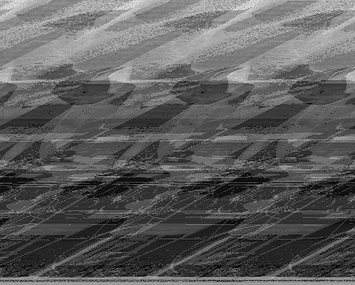
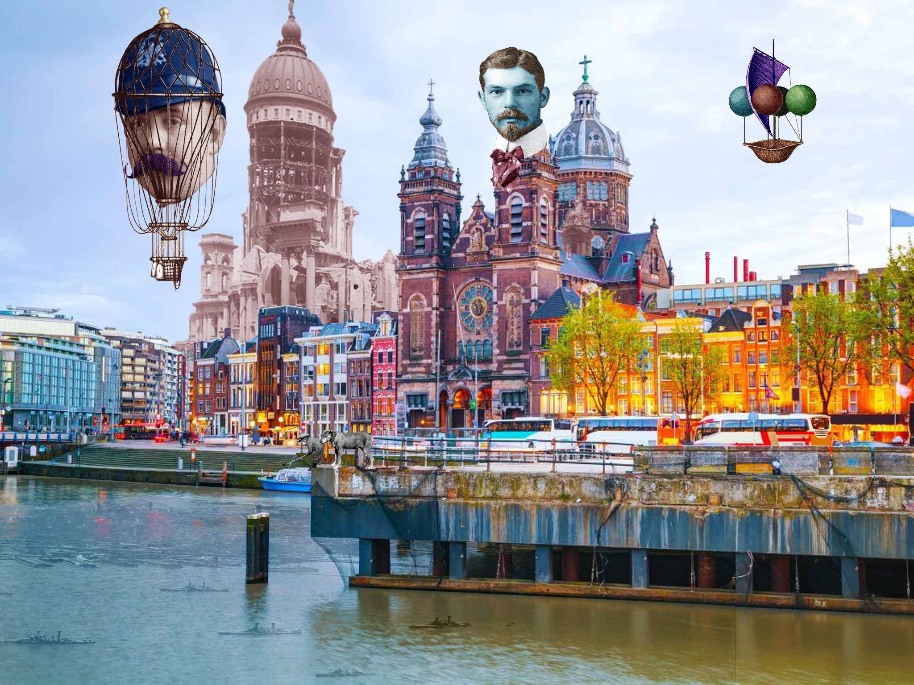

Diego Esparza
Artist Statement

Glitchme, Digital Art, 2019
This was the first major piece of digital art that I had done, which I wasn't not really enthusiastic about it at first. But after seeing how it had came out, I ws very pleased with it, because when I was looking at the orignal photo then looking at it's gliched version, I found the expericance very enjoyable.

A Plinths of Pics, Digital Art/Pop Art, 2019
I didn't really know what to call this piece but for now I'll go with "A Plinths of Pics" since the picture already odd and makes no sense which makes the best sense. This work I feel is still a work in progress since while there is many odd figures in the picture, it still needs more until the place is unrecognisable. I started the idea with influence of Terry Gilliams work with Monty Python so I wan't to recreate it at the best I could. As a group we decided to pick a city to be our scene and I chose Amsterdam since it looked so picturesque.
Chatter, Sound Art, 2019
In my mind I wanted to make it so the sound would get prgressivaly more caotic with sounds, but due to limitations and errors, I came up with this. The sounds that I had aquired were nice but I felt as though if i had know what effects to used, it would have been the same except in a certain fromat
Walkman, Video Art, 2019
An assinment that I did that came out pretty well if I do say so myself. Video and sound had to be original but with no one to assinst me in filming, certain scenes that I wanted to film were impossible, so I stuck to what I could do. The editing was a bit of a hassel but filming was difficult since for a certain shoots, I was fraid that someone would call the police on me.
"It Might be, Interactive/NetArt, 2019
I had visited many websight that artist Rafael Rozendaal had created with his simple designed and function, but all surving no vital role in being there. I had spend almost a week trying to understand his concept some much that I had a tab for one of his sights open that I used to go on for about 2 weeks. So when it came time for this, I wanted to do something ver similar, and it came out quite succesful. .

Pepperland Station, Composite Art, 2019
I Remember when I had first watch the Beatle's film, Yellow Submarine, I couldn't help myself to be amazed about the art style. It was so vibrant with many different colors, and it didn't matter which color matched or was to vibrant, and all hand drawn not looking for detail. Now I know that is most common form of pop art who I had previously hated until i had understood it's concept. I made this piece because I had always loved steam locomotives with visible pistons and the connection rods and plus I wanted to add color when it was only monochrome. All of this was originally black and white so I added different colors to each different article of clothing, also there was no smoke so I added that mixed in with some wild patterns.

Boogaloo Update, Composite Art, 2019
I have always loved playing the FPS game, Team Fortress 2 (TF2); not because of it's quality of gaming but for all the crazy story and personality of every character in the game. there's 9 classes you can play but for every class, they have there own story behind them as a an insane personality. Any, a while back they had an update where the developers to add cosmetic items that the gaming community had made. Now most people have said that TF2 is a "hat-simulator" because there are in-game cosmetics that you can collect and can add to your player with some having a rare particle effect on them which is why there is has been an in-game economy of players trading for hats. Beside that, the update was called the "Robotic Boogaloo update" where the TF2 community had made several robotically theme cosmetics of pre-existing cosmetics. The reason behind the robot theme was because without giving to much detail with the lore.in the game, you can play a tour mission where you go on to destroy robot alter-egos of the classes, and for a short while people made robotic hats and the developers saw this and added them to the game. So I made this to sort and capture the mindset of every player that was playing during the update, of want to get every single cosmetic for there class.

La vita alta, Composite Art, 2019
In the Looney Toon's cartoon "Bugs Bunny Rides again" made in 1948, we are introduced to Yosemite Sam for the first time. There's a scene the Yosemite Sam says to Bugs up close, "This town ain't big enough for the two of us", and Bugs is to say, "it ain't?" then immediately runs out of the saloon with some wooden boards and a hammer, he's off screen for about 5 seconds with the sounds of hammering, sawing and drilling, comes back and says to Sam "is it big enough now?", it then cuts to the small western town but now having skyscrapers in the background. I though that was hilarious growing up, and I had like that of things not making sense to prove a point. It also reminded me of the works of Federico Fellini, manly his comedy/drama "8 1/2" so I mixed the types of building around to see what looking interesting. Though while I was making this, I started to thing of how it would be inevitable that in the future that with growing population and overcrowding in cities, large housing structures will become about the size of skyscrapers, this may not be true but it sure does seem like a high possibility. but to add, a skyscraper, they can't be the same, thats boring, they have to be different with a new structure and design for each one. And to add to Fellini's works, I added a picture of Marcello Mastroianni to the sky with his tie showing the launch tower from the film 8 1/2.